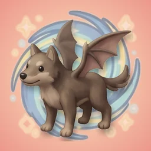
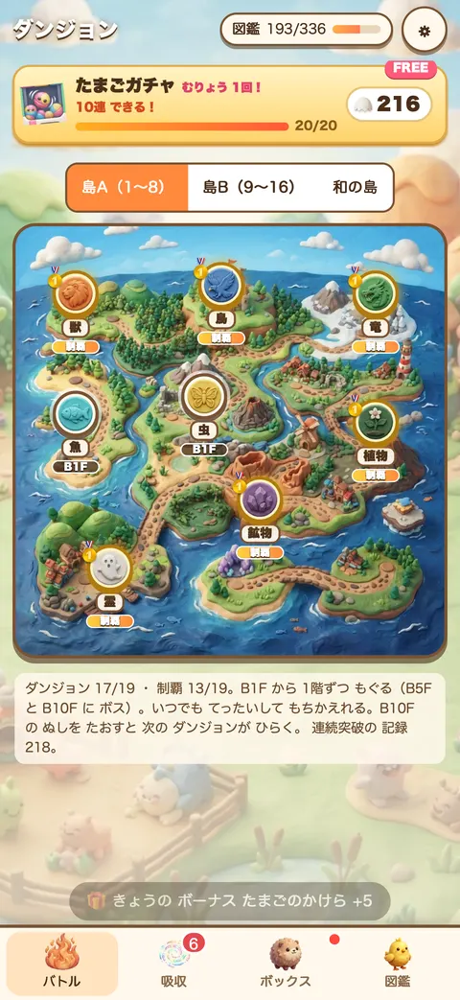
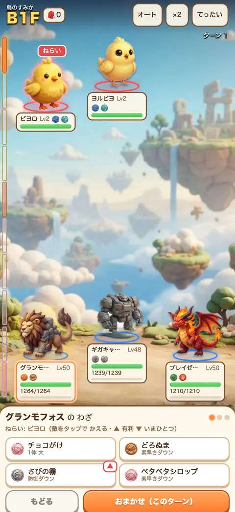
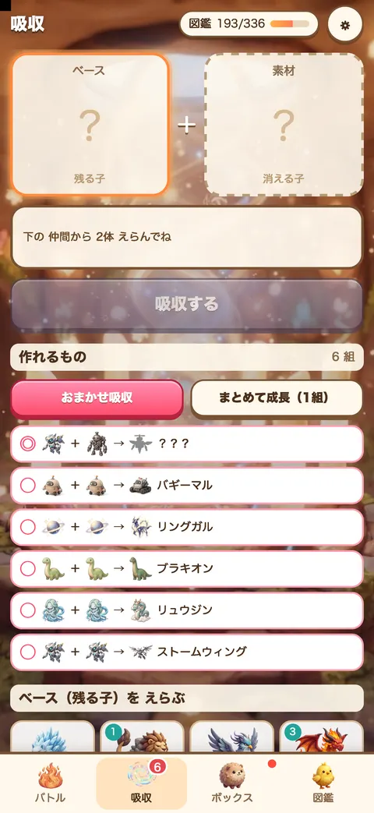
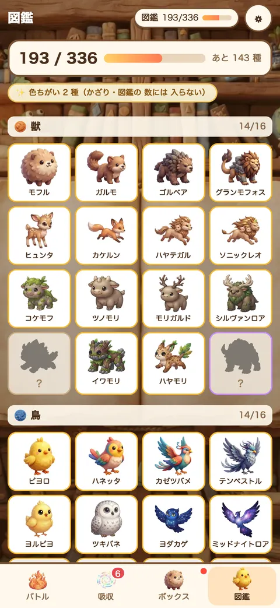
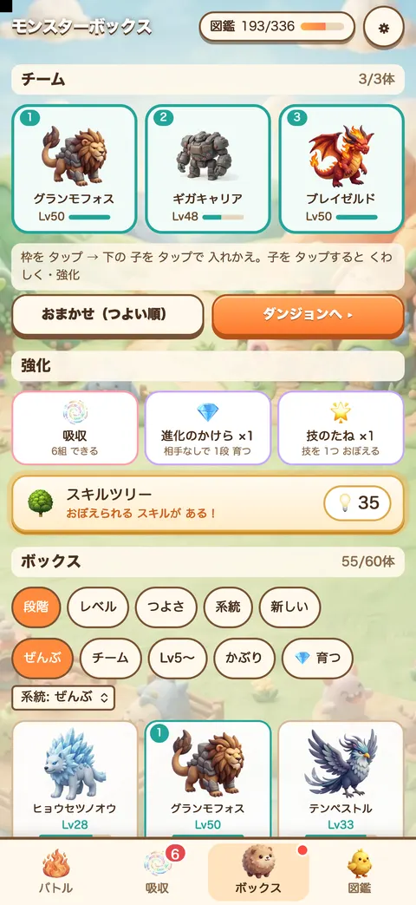
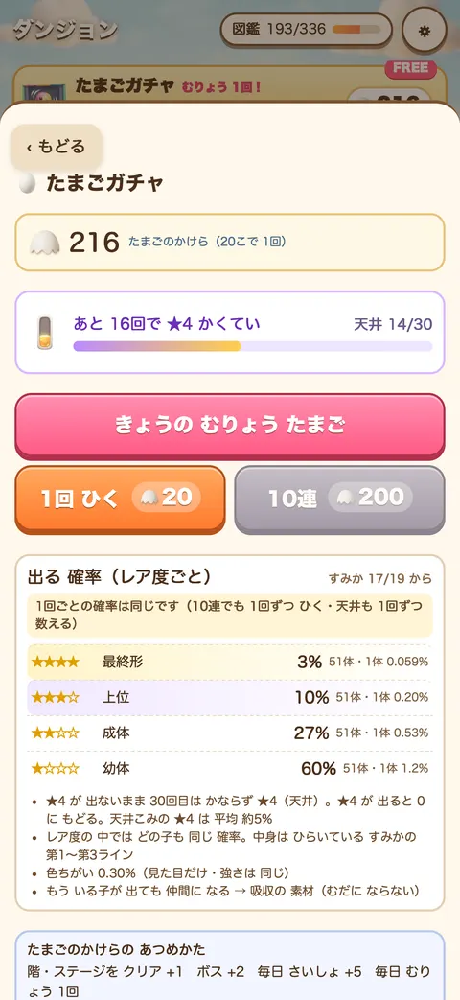

吸収して育てるRPG（iPhone）
モンスターアイランド
たたかった敵が、仲間に。
2体を合わせて、新しい子へ。
すみかごとのダンジョンを B1F から B10F へ。勝つたびに「もっともぐる」か「かえる」か。仲間にした子を2体合わせると、まったく別の子が生まれます。図鑑336体をうめよう。
App Store で近日公開無料・広告あり／iPhone（iOS 18 以降）


アプリの画面
モンスターアイランドとは？
モンスターアイランドは、ダンジョンにもぐって、たたかった敵を仲間に。2体を「吸収」させると別の子が生まれる。19のすみか、336体の図鑑。ターン制バトル、たまごガチャ（遊んで集めたかけらだけ・課金なし）。無料（広告あり）のiPhoneアプリ。
- 料金無料・広告あり
- 対応iPhone（iOS 18 以降）
- ジャンルのんびり






こんな人におすすめ
- モンスターを集めて育てるゲームが好きな人
- どの2体で何が生まれるか、ためすのが好きな人
- すきま時間に少しずつ進めたい人
遊び方は3ステップ
- もぐる地図のすみかをえらんで B1F から。1階ごとに 3体 vs 3体のターン制バトル。
- 仲間にたたかった敵が仲間になることがあります。もぐるか帰るかは、袋の中身と相談。
- 吸収仲間の2体を合わせると、別の子に。図鑑をうめて、新しいすみかをひらこう。
ルール
ダンジョンにもぐる
すみかごとに B1F から B10F まで。1階ごとに 3体 vs 3体のターン制バトル。勝ったら「もぐる」か「かえる」かをえらびます。
袋をもちかえる
無事に帰ると袋の分のけいけん玉をもちかえれます。ぜんめつすると袋の中身はなくなります。5階と10階にはボス。
2体を吸収
仲間の2体を合わせると、組み合わせで決まった別の子になります。図鑑336体をうめよう。
特徴
- 19のすみか獣・竜・宝石・和のすみかまで
- 336体の図鑑色ちがいもいる（見た目だけ）
- 3体 vs 3体技とねらいをえらぶターン制
- かけらでガチャ遊んで集めるだけ・課金なし
モンスターアイランド を無料で遊んでみる
App Store で近日公開無料・広告あり／iPhone（iOS 18 以降）
くわしい遊び方
さいしょに3体から1体をえらびます。地図のすみか（ダンジョン）をえらんで B1F からもぐり、1階ごとにターン制のバトル（3体 vs 3体）をします。勝ったら「もっともぐる」か「かえる」をえらびます。たたかった敵は、仲間になることがあります。
- もちかえり：無事に帰ると袋の分のけいけん玉をもちかえれます。ぜんめつすると袋の中身はなくなります
- ボス：5階と10階にはボス。10階のぬしをたおすと、新しいすみかがひらきます（ぜんぶで19）
- 吸収：仲間の2体を合わせると、組み合わせで決まった別の子になります。図鑑はぜんぶで336体
- モンスターボックス：チーム3体の入れかえ、進化のかけら・技のたねで強化します
よくある質問
敵を仲間にして合体させるモンスターゲームは？
モンスターアイランドは、ダンジョンでたたかった敵が仲間になり、仲間の2体を「吸収」させると別の子が生まれる iPhone のRPGです。19のすみか、336体の図鑑。ガチャは遊んで集めたかけらだけで、課金はありません。
無料ですか？
はい、無料でダウンロードして遊べます（広告あり）。App Store で近日公開です。
どの端末で使えますか？
iPhone（iOS 18 以降）で使えます。Android 版はありません。
どの2体で何が生まれるの？
「吸収」の画面の「作れるもの」に、いまの仲間で作れる組み合わせが出ます。まだ会ったことのない子は「？？？」で表示されます。
たまごガチャは課金ですか？
いいえ。ダンジョンで集めた「たまごのかけら」だけでひけます。課金はありません。出る確率はガチャの画面の表にのせています。30回のうちにいちばん上のレア度が出ないときは、30回目にかならず出ます。
色ちがいは強いの？
色ちがいは見た目だけで、強さは同じです。図鑑の数にも入りません。
ぜんめつしたらどうなる？
そのときもっていた袋の中身（けいけん玉など）はなくなります。仲間や図鑑は消えません。早めに「かえる」のも作戦です。
音を止めたい
右上の歯車（設定）で、効果音と BGM をそれぞれオン・オフできます。
はじめからやりなおしたい
設定の「はじめから やりなおす」で、さいしょの1体えらびからやりなおせます（記録はもどせません）。
記録はどこに保存されますか？
この iPhone の中にだけ保存しています。アプリを削除すると記録も消えます。
お問い合わせ
不具合やご要望は、メールでお知らせください。お使いの iPhone の機種と iOS のバージョンを書いていただけると助かります。